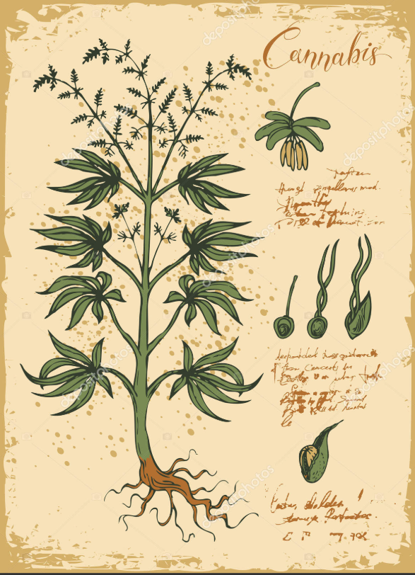
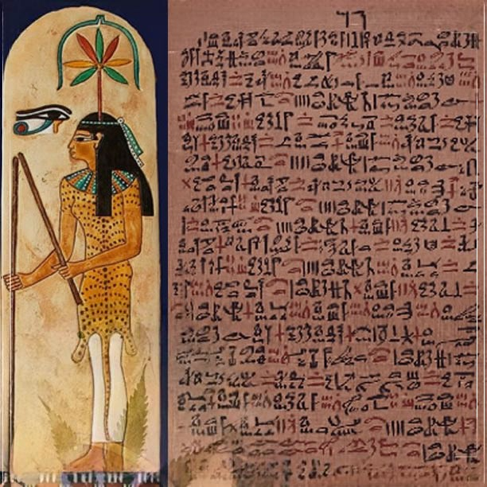
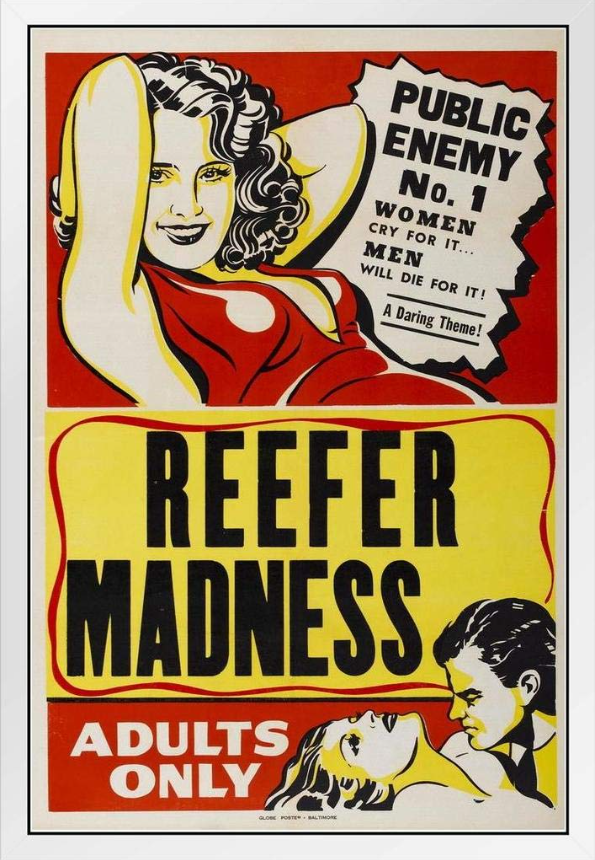

📜 Origem e História da Cannabis
A cannabis, também conhecida como maconha, é uma planta com uma longa e complexa história de uso medicinal, religioso, espiritual, recreativo e industrial que remonta a milhares de anos. Seu nome científico é Cannabis sativa, e ela tem sido cultivada em diversas partes do mundo por seus múltiplos usos, variando desde tecido e corda até medicamentos e rituais espirituais.
🌍 Primeiros registros históricos
As primeiras evidências do uso da cannabis vêm da China Antiga, por volta de 10.000 a.C., onde suas sementes eram utilizadas como fonte de alimento, e suas fibras para confecção de roupas e cordas. Já em 2.700 a.C., o imperador chinês Shennong citava a cannabis em sua obra médica tradicional, descrevendo-a como uma planta medicinal com propriedades analgésicas e sedativas.
Na Índia, a cannabis é mencionada nos textos sagrados Vedas como uma das cinco plantas sagradas. Era consumida na forma de bhang (mistura com leite e especiarias) e considerada um presente dos deuses. Seu uso ritualístico estava ligado ao deus Shiva, e era também utilizada para tratar distúrbios do sono, dor e perda de apetite.
🏛️ Cannabis no Egito e no Oriente Médio
No Egito Antigo, há registros de uso medicinal da cannabis em papiros médicos, como o Papiro de Ebers (cerca de 1.500 a.C.), indicando que a planta era usada no tratamento de inflamações e como analgésico. Arqueólogos encontraram traços de THC em múmias, sugerindo que a cannabis era também utilizada em rituais funerários.
No Oriente Médio, durante o Império Persa, a cannabis era chamada de “qunubu”, termo que acredita-se ter dado origem à palavra “cannabis”. Era utilizada em rituais religiosos zoroastristas e disseminou-se para outras culturas através das rotas comerciais da região.
⚖️ A criminalização nos séculos XIX e XX
No final do século XIX e início do XX, a cannabis começou a ser associada a comportamentos marginalizados em diversos países. Nos Estados Unidos, por exemplo, o preconceito contra imigrantes mexicanos, que utilizavam a planta de forma recreativa, influenciou fortemente as políticas públicas. A campanha de desinformação e propaganda, como a do filme Reefer Madness, levou à proibição federal da cannabis em 1937 com o Marijuana Tax Act.
No Brasil, a criminalização ocorreu ainda no século XIX, sendo associada a populações negras escravizadas. A proibição foi reforçada ao longo do século XX, especialmente com a inclusão da cannabis em listas internacionais de substâncias proibidas, como a Convenção Única de 1961 da ONU.
💊 Renascimento medicinal
A partir dos anos 1990, com o avanço das pesquisas científicas e a descoberta do sistema endocanabinoide no corpo humano, a cannabis começou a ser redescoberta como um agente terapêutico. Estudos comprovaram seus efeitos positivos no tratamento de doenças como epilepsia, esclerose múltipla, dor crônica, autismo, entre outras.
Países como Canadá, Israel e alguns estados dos EUA legalizaram o uso medicinal, e posteriormente também o uso recreativo, promovendo uma nova era de regulamentação e aceitação da planta.
🌐 Situação atual e perspectivas futuras
Atualmente, a cannabis está legalizada para uso medicinal em dezenas de países, e para uso recreativo em lugares como Uruguai, Canadá, Malta, Alemanha e diversos estados norte-americanos. No Brasil, o uso medicinal é permitido sob prescrição e mediante autorização da Anvisa, com produtos importados ou nacionalizados à base de canabidiol (CBD).
A discussão sobre legalização plena continua crescendo, envolvendo aspectos de saúde pública, justiça social, economia e direitos humanos. Espera-se que, com mais educação, regulamentação e pesquisa, a cannabis possa ser tratada com mais racionalidade e menos preconceito.

📚 Curiosidades e fatos históricos
- 🕉️ Na Índia, acredita-se que o deus Shiva usava cannabis para meditar.
- ⚓ Cristóvão Colombo teria trazido sementes de cânhamo em sua viagem para as Américas.
- 🧪 O sistema endocanabinoide foi descoberto apenas na década de 1990.
- 📖 A Bíblia menciona uma planta chamada “qěnēh bośem”, que pode ter sido cannabis.